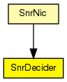
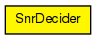

Decider module to be used with SnrEval
This component has been taken over from Mobility Framework 1.0a5.
The following diagram shows usage relationships between types. Unresolved types are missing from the diagram.
The following diagram shows inheritance relationships for this type. Unresolved types are missing from the diagram.
| Name | Type | Description |
|---|---|---|
| SnrNic | compound module |
This is the easiest nic to implement "real" network behaviour. It uses the CsmaMacLayer and the SnrDecider and SnrEval modules. |
| Name | Type | Default value | Description |
|---|---|---|---|
| debug | bool | false |
debug switch |
| snrThresholdLevel | double |
| Name | Value | Description |
|---|---|---|
| display | i=box2_s |
| Name | Direction | Size | Description |
|---|---|---|---|
| uppergateOut | output | ||
| lowergateIn | input |
// // Decider module to be used with SnrEval // // This component has been taken over from Mobility Framework 1.0a5. // simple SnrDecider { parameters: bool debug = default(false); // debug switch double snrThresholdLevel @unit("dB"); @display("i=box2_s"); gates: output uppergateOut; input lowergateIn; }